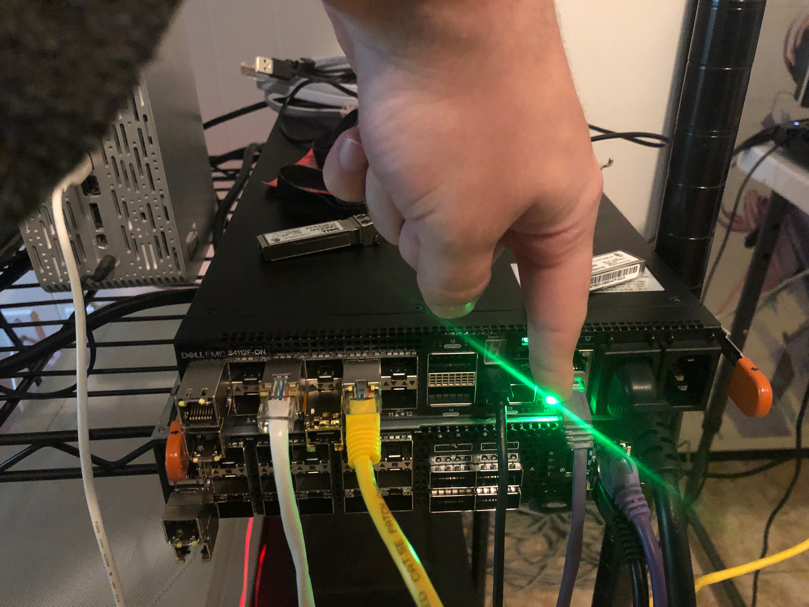

Multiple Span on 4112F-ON with OS10
In this test case I am testing to see if we can configure a Dell 4112F-ON with OS10 to create a one to many port configuration using SPAN.
Helpful Links
ONIE Network Install Process Overview
My Configuration
General Configuration
- ONIE host is running RHEL 8
- I am using a Dell S4112F-ON for testing
- OS10 version 10.5.0.2
- PFSense running DNS and DHCP as services
RHEL Release Info
NAME="Red Hat Enterprise Linux"
VERSION="8.0 (Ootpa)"
ID="rhel"
ID_LIKE="fedora"
VERSION_ID="8.0"
PLATFORM_ID="platform:el8"
PRETTY_NAME="Red Hat Enterprise Linux 8.0 (Ootpa)"
ANSI_COLOR="0;31"
CPE_NAME="cpe:/o:redhat:enterprise_linux:8.0:GA"
HOME_URL="https://www.redhat.com/"
BUG_REPORT_URL="https://bugzilla.redhat.com/"
REDHAT_BUGZILLA_PRODUCT="Red Hat Enterprise Linux 8"
REDHAT_BUGZILLA_PRODUCT_VERSION=8.0
REDHAT_SUPPORT_PRODUCT="Red Hat Enterprise Linux"
REDHAT_SUPPORT_PRODUCT_VERSION="8.0"
Red Hat Enterprise Linux release 8.0 (Ootpa)
Red Hat Enterprise Linux release 8.0 (Ootpa)
OS10 Version
Dell EMC Networking OS10 Enterprise
Copyright (c) 1999-2019 by Dell Inc. All Rights Reserved.
OS Version: 10.5.0.2
Build Version: 10.5.0.2.468
Build Time: 2019-10-19T00:29:00+0000
System Type: S4112F-ON
Architecture: x86_64
Up Time: 00:13:11
Setup ONIE Prerequisites
See ONIE Install Setup for instructions.
Configure Device as TAP
Physical Configuration
For this configuration to work, we will use the management interface as the input interface for the tap. See image below. You will need to move your network cable over from your usual network to your traffic generator.

Problem
The way this worked on OPX was to use the Linux kernel module called TC. The net_sched module which supports ingress packet manipulation is not available on OS10. It could be reinstalled, but I didn't explore this option. Currently I don't have a working config on OS10.
Test with Mirror Ports
It looks like OS10 only supports one destination port on a port mirror. See the below.
OS10(conf-mon-local-1)# do show monitor session 1
S.Id Source Destination Dir Mode Source IP Dest IP DSCP TTL Gre-Protocol State Reason
---------------------------------------------------------------------------------------------------------------------------------------
1 ethernet1/1/3 both port N/A N/A N/A N/A N/A false Destination is not configured
OS10(conf-mon-local-1)# destination interface ethernet 1/1/7
OS10(conf-mon-local-1)# destination interface ethernet 1/1/8
% Error: Configuration mismatch.
OS10(conf-mon-local-1)# no destination interface ethernet 1/1/7
OS10(conf-mon-local-1)# destination interface ethernet 1/1/8
OS10(conf-mon-local-1)#